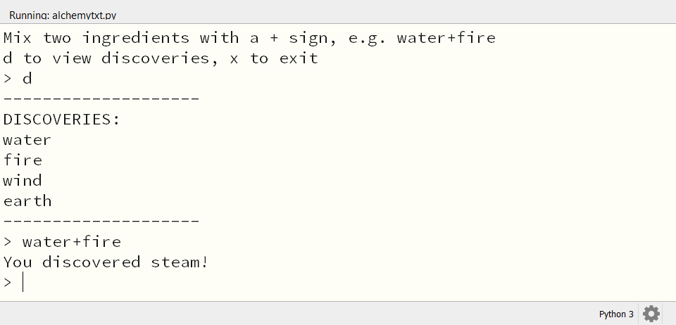
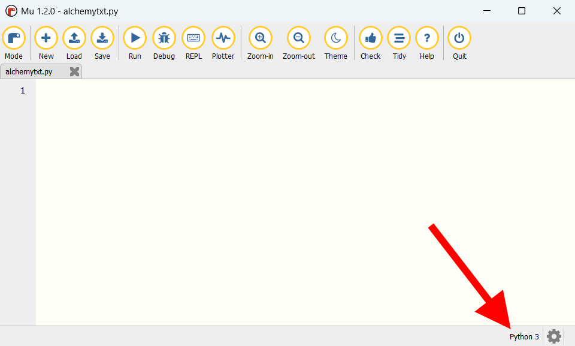

4.1. Voorbereidingen#
4.1.1. Lists en dictionaries#
Om in het spel bij te houden welke elementen de speler heeft ontdekt en welke combinaties mogelijk zijn, gaan we gebruik maken van lists en dictionaries. Lists ben je al tegengekomen in eerdere games, maar dictionaries ken je waarschijnlijk nog niet. Om goed te begrijpen hoe deze datatypes (want dat zijn het) werken, gaan we eerst een tekstversie van het spel maken, zonder Pygame Zero. Doordat we ons niet om zaken als sprites en events hoeven te bekommeren, kunnen we ons volledig concentreren op de logica van het spel.

Uiteraard zullen we na de tekstversie een grafische versie maken met Pygame Zero, die zo goed mogelijk lijkt op spellen als Infinite Craft en Little Alchemy.
4.1.2. Mappen en bestanden#
Maak voor dit project in je games map een nieuwe map aan met de naam alchemy. Voor de tekstversie gebruiken we geen sprites, dus we hebben nog geen images map nodig. We maken die pas aan als we de Pygame Zero versie gaan maken.
Maak in Mu Editor een nieuw bestand en sla het op in je alchemy map onder de naam alchemytxt.py.
Waarschijnlijk heb je Mu Editor nog in Pygame Mode staan. Voor de tekstversie van het spel is dat onhandig. Stel daarom Mu Editor in op Python 3 mode (gebruik de Mode knop).
